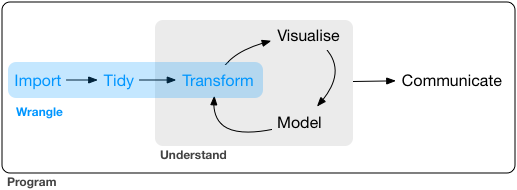
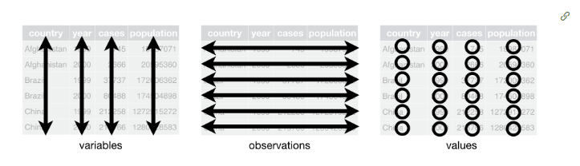
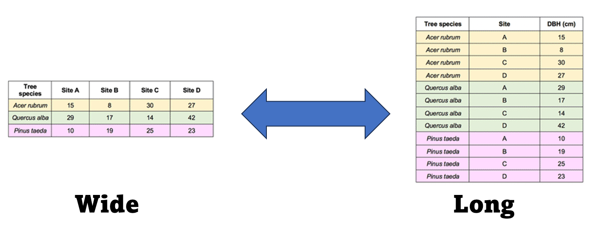

install.packages("tidyverse")Appendix B — Data Wrangling
Data wrangling might be very important for you in your career. While this topic doesn’t fall neatly in any of our topics, I usually decide to have a break around week 5 and look at this.
This assignment was written based on the following literature:
- R for Data Science (2e) written by Hadley Wickham, Mine Çetinkaya-Rundel, and Garrett Grolemund. Wickham, Çetinkaya-Rundel, and Grolemund (2023) And available online (for free!) at: https://r4ds.hadley.nz/ Please be aware that this book is the second edition and has changed dramatically from the first edition. I highly recommend it! Even if you have read the first edition
- The original “Tidy Data” paper. (Wickham 2014) http://www.jstatsoft.org/v59/i10/.
- Data Science in R: A Gentle Introduction. (Scott, n.d.) https://bookdown.org/jgscott/DSGI/
- The Tidy Data vignette: https://tidyr.tidyverse.org/articles/tidy-data.html
- The dplyr vignette: https://dplyr.tidyverse.org/
- Some videos like the following: https://www.youtube.com/watch?v=1ELALQlO-yM&ab_channel=PositPBC
I hope this is a useful assignment for you, and I highly recommend you check all of those tools! Hadley Wickham is the chief scientist at RStudio and he is the creator of ggplot, dplyr, and many other great tools.
The tidyverse is an opinionated collection of R packages designed for data science. All packages share an underlying design philosophy, grammar, and data structures. The tidyverse is “opinionated” in that it is fairly rigid about input types and output types, and most functions are designed to accomplish one specific task. This makes it easier for users to avoid some of the sneakier bugs that are hard to notice (for example: different output types of the apply functions). It also tends to make analyses more reproducible.
The packages are:
- ggplot2: You have been using this already!
- dplyr: In my mind the most important package in the tidyverse. Plenty of tools
- tidyr: Make tidy data: every variable goes in a column, and every column is a variable
- readr: I rarely use this one, but you can read csv’s and other dataframes into “tibbles” (tidy’s idea of a data frame)
- purrr: Provides a set of tools for working with vectors and functions
- tibble: Modern re-imagining of the data frame, keeping what time has proven to be effective, and throwing out what it has not
- stringr: Helps when working with strings (aka words and letters)
- forcats: Solves some issues with factors and provides tools to work with them (remember, a factor is a “grouping variable”
You can install all of them using the following:
You can also load ALL of them using the following:
library(tidyverse)
What are all these conflicts?
When you load the package, you will see a lot of conflicts. This is normal in r and it becomes pretty common the more packages you use.
Sometimes, different packages name their functions the same (for example some() is a function on dplyr, as well as a basic function in the package car).
If you want to force r to use the function in the package car you can code it the following way: car::some() and if you want to use the purrr versions use: purrr::some()
I recommend doing this, particularly if you are collaborating on a project, using version control, creating websites or apps.
While loading all the packages at once is useful, I recommend you load the specific packages you want!
B.1 Additional tidy packages
I also recommend you use the package lubridate if you ever work with dates!
B.2 My thoughts
Before continuing I do want to admit to the fact that I generally prefer a combination of baseR and the tidyverse, and I will continue supplying code in baseR. I also really enjoy using data.table which is faster and has some great functionality, and I recommend you check it out after you master tidy. However, I do recognize that a majority of users prefer the tidyverse, and have fully transitioned to using it.
Particularly, most users find that the syntax can be easier to understand and write, as it is written from left to right (instead of inside-out). You are free to use any package or any syntax that works best for you.
While early in the semester I had some sections in which I expected you to run some specific code (with the idea of showcasing some of baseR syntax), going forward the focus will be in the results. If you identify the analysis needed, and you do it, it will be correct! No matter hoe you get there!
Tibble, data.frame, what’s the difference?
I don’t want you to focus on this too much. These two types of objects have different structures, and the tidyverse uses tibble. There isn’t anything too fundamentally different between them, so for the time being, just think of them as equal. I will continue to refer to them as data.frame
B.3 Data Wrangling
There are three main parts for data analysis:
- Managing (or Wrangling) the data
- Analyzing it (vi visualization and modeling)
- Communicating the results
I like this figure from the first edition of R for Data Science: https://r4ds.had.co.nz/index.html

We have been working on visualizing and modeling data (mostly modeling though). Now, we need to focus on wrangling data.
As you see in the image, there are three main important sections when wrangling data:
- Import
- Tidy
- Transform
B.3.1 Import
read.csv vs read_csv
In the last ~5 years there has been a migration from read.csv() to read_csv(). Main differences are: 1) read.csv() doesn’t require a package and creates a data.frame, while read_csv() creates a tibble
You have so far been importing data using the read.csv function by saving the file in the same directory as the quarto file. However you should be able to do all of the following:
Create a project and load files from within the project
Add a folder to the project and read files from the folder, not the
rootof the directoryOpen an R script (not quarto, not in a project) and import a dataset
Change the working directory and check the working directory from within
R
If you can do all of that, congrats! You have 1/3 of the skills needed to wrangle data in R 😃 and you can skip the first assignment question.
If you don’t know how to do these things, here is your first assignment question: go to https://www.statology.org/import-csv-into-r/ and follow the first two methods and make sure you can do all these things
B.3.2 Tidy and transform
Let’s talk about probably the biggest change using tidy.
For this we will use a “pre-loaded” data set in R. The iris dataset. This dataset is included with baseR and you can call it using the data() function:
data(iris)
summary(iris) Sepal.Length Sepal.Width Petal.Length Petal.Width
Min. :4.300 Min. :2.000 Min. :1.000 Min. :0.100
1st Qu.:5.100 1st Qu.:2.800 1st Qu.:1.600 1st Qu.:0.300
Median :5.800 Median :3.000 Median :4.350 Median :1.300
Mean :5.843 Mean :3.057 Mean :3.758 Mean :1.199
3rd Qu.:6.400 3rd Qu.:3.300 3rd Qu.:5.100 3rd Qu.:1.800
Max. :7.900 Max. :4.400 Max. :6.900 Max. :2.500
Species
setosa :50
versicolor:50
virginica :50
If we wanted to get a dataframe with only setosa species, add a new column where we multiply the width of the pedal by 10 (to change units) we would do the following in baseR:
Setosa<-iris[iris$Species=="setosa",]
Setosa$widthm<-Setosa$Sepal.Width*10
mean(Setosa$widthm)[1] 34.28If we used the tidyverse
library(tidyverse)Warning: package 'tidyverse' was built under R version 4.3.2Warning: package 'ggplot2' was built under R version 4.3.3Warning: package 'lubridate' was built under R version 4.3.2── Attaching core tidyverse packages ──────────────────────── tidyverse 2.0.0 ──
✔ dplyr 1.1.2 ✔ readr 2.1.4
✔ forcats 1.0.0 ✔ stringr 1.5.0
✔ ggplot2 3.5.0 ✔ tibble 3.2.1
✔ lubridate 1.9.3 ✔ tidyr 1.3.0
✔ purrr 1.0.1
── Conflicts ────────────────────────────────────────── tidyverse_conflicts() ──
✖ dplyr::filter() masks stats::filter()
✖ dplyr::lag() masks stats::lag()
ℹ Use the conflicted package (<http://conflicted.r-lib.org/>) to force all conflicts to become errorsWe would do the following:
iris %>% filter(Species=="setosa") %>% mutate(widthm = Sepal.Width*10) Sepal.Length Sepal.Width Petal.Length Petal.Width Species widthm
1 5.1 3.5 1.4 0.2 setosa 35
2 4.9 3.0 1.4 0.2 setosa 30
3 4.7 3.2 1.3 0.2 setosa 32
4 4.6 3.1 1.5 0.2 setosa 31
5 5.0 3.6 1.4 0.2 setosa 36
6 5.4 3.9 1.7 0.4 setosa 39
7 4.6 3.4 1.4 0.3 setosa 34
8 5.0 3.4 1.5 0.2 setosa 34
9 4.4 2.9 1.4 0.2 setosa 29
10 4.9 3.1 1.5 0.1 setosa 31
11 5.4 3.7 1.5 0.2 setosa 37
12 4.8 3.4 1.6 0.2 setosa 34
13 4.8 3.0 1.4 0.1 setosa 30
14 4.3 3.0 1.1 0.1 setosa 30
15 5.8 4.0 1.2 0.2 setosa 40
16 5.7 4.4 1.5 0.4 setosa 44
17 5.4 3.9 1.3 0.4 setosa 39
18 5.1 3.5 1.4 0.3 setosa 35
19 5.7 3.8 1.7 0.3 setosa 38
20 5.1 3.8 1.5 0.3 setosa 38
21 5.4 3.4 1.7 0.2 setosa 34
22 5.1 3.7 1.5 0.4 setosa 37
23 4.6 3.6 1.0 0.2 setosa 36
24 5.1 3.3 1.7 0.5 setosa 33
25 4.8 3.4 1.9 0.2 setosa 34
26 5.0 3.0 1.6 0.2 setosa 30
27 5.0 3.4 1.6 0.4 setosa 34
28 5.2 3.5 1.5 0.2 setosa 35
29 5.2 3.4 1.4 0.2 setosa 34
30 4.7 3.2 1.6 0.2 setosa 32
31 4.8 3.1 1.6 0.2 setosa 31
32 5.4 3.4 1.5 0.4 setosa 34
33 5.2 4.1 1.5 0.1 setosa 41
34 5.5 4.2 1.4 0.2 setosa 42
35 4.9 3.1 1.5 0.2 setosa 31
36 5.0 3.2 1.2 0.2 setosa 32
37 5.5 3.5 1.3 0.2 setosa 35
38 4.9 3.6 1.4 0.1 setosa 36
39 4.4 3.0 1.3 0.2 setosa 30
40 5.1 3.4 1.5 0.2 setosa 34
41 5.0 3.5 1.3 0.3 setosa 35
42 4.5 2.3 1.3 0.3 setosa 23
43 4.4 3.2 1.3 0.2 setosa 32
44 5.0 3.5 1.6 0.6 setosa 35
45 5.1 3.8 1.9 0.4 setosa 38
46 4.8 3.0 1.4 0.3 setosa 30
47 5.1 3.8 1.6 0.2 setosa 38
48 4.6 3.2 1.4 0.2 setosa 32
49 5.3 3.7 1.5 0.2 setosa 37
50 5.0 3.3 1.4 0.2 setosa 33So, there are two main differences. tidy reads “left to right”, so, you filter the data, and the mutate it. But maybe the main difference is the use of a piping operator %>%.
R pipes are a way to chain multiple operations together in a concise and expressive way. They are so popular thar R introduced them to their base use as: |>.
Now, imagine you want to
1) add the widthm column to the original dataset
2) estimate all of the following for each of the three species and each of the columns:
Mean, median, maximum value, and minimum value.
That seems like a lot of coding using baseR! However, using pipes and the powerful dplyr, we can do the following:
iris %>% group_by(Species) %>% mutate(widthm = Sepal.Width*10) %>% summarise_all(list(mean=mean,median=median,max=max,min=min))# A tibble: 3 × 21
Species Sepal.Length_mean Sepal.Width_mean Petal.Length_mean Petal.Width_mean
<fct> <dbl> <dbl> <dbl> <dbl>
1 setosa 5.01 3.43 1.46 0.246
2 versico… 5.94 2.77 4.26 1.33
3 virgini… 6.59 2.97 5.55 2.03
# ℹ 16 more variables: widthm_mean <dbl>, Sepal.Length_median <dbl>,
# Sepal.Width_median <dbl>, Petal.Length_median <dbl>,
# Petal.Width_median <dbl>, widthm_median <dbl>, Sepal.Length_max <dbl>,
# Sepal.Width_max <dbl>, Petal.Length_max <dbl>, Petal.Width_max <dbl>,
# widthm_max <dbl>, Sepal.Length_min <dbl>, Sepal.Width_min <dbl>,
# Petal.Length_min <dbl>, Petal.Width_min <dbl>, widthm_min <dbl>B.3.3 Wide and long data
One of the most important transformation is changing your data from wide to long format (or long to wide).
While we generally have this structure in our data:

If we have some repeated measures (think, an individual gets measured weekly), we can have each week be a column, or we can have a column named “week” and a column for the “value”.
Think about the following example: You are traveling to four sites and measuring the diameter at breast height for 3 species of tree. You do this at four sites. There are two ways you can present these data:

Both can be useful! And we can go back and from using R.
tree<-read.csv("data/trees.csv")
head(tree) Species Site.A Site.B Site.C Site.D
1 Acer rubrum 15 8 30 27
2 Quercus alba 29 17 14 42
3 Pinus taeda 10 19 25 23Let’s make the dataset longer! We need to make all columns (except species) into two columns, one for the site, one for the value:
treelong<- tree%>% pivot_longer(!Species,names_to = "site", values_to = "meanDBH")
head(treelong)# A tibble: 6 × 3
Species site meanDBH
<chr> <chr> <int>
1 Acer rubrum Site.A 15
2 Acer rubrum Site.B 8
3 Acer rubrum Site.C 30
4 Acer rubrum Site.D 27
5 Quercus alba Site.A 29
6 Quercus alba Site.B 17And let’s make this “long” dataset into a wide form:
treewide<- treelong%>% pivot_wider(names_from = "site", values_from = "meanDBH")
treewide# A tibble: 3 × 5
Species Site.A Site.B Site.C Site.D
<chr> <int> <int> <int> <int>
1 Acer rubrum 15 8 30 27
2 Quercus alba 29 17 14 42
3 Pinus taeda 10 19 25 23Easy! This will be useful for you in the future!
Please read careful before starting to work on the assignment: For this week’s assignment, you need to go to: https://bookdown.org/jgscott/DSGI/data-wrangling.html and read chapter 6. Reality is, this “tutorial” and this book as well as the R for Data Science book are better written and have better information than what I could do for this class, and I think it will be more useful to you!. If you are new to R and the tidyverse your assignment I recommend you open a new r script and follow the “tutorial”. You can ask me questions. The assignment will be to just let me know in Canvas whether you like this way (or baseR) better. If you are experienced in tidy, and you know the basics, then, I recommend you read chapter 17 https://bookdown.org/jgscott/DSGI/probability-models.html. (Actually, everyone should read it, if you have time). If you understand probability, then you understand statistics, whether they are frequentist, Bayesian, multivariate, etc. You can also read any other chapter if you find it more useful. Your assignment is telling me what chapter you worked on.
Scott, James. n.d. Data Science in r: A Gentle Introduction. https://bookdown.org/jgscott/DSGI/.
Wickham, Hadley. 2014. “Tidy Data.” The Journal of Statistical Software 59 (10). http://www.jstatsoft.org/v59/i10/.
Wickham, Hadley, Mine Çetinkaya-Rundel, and Garrett Grolemund. 2023. R for Data Science: Import, Tidy, Transform, Visualize, and Model Data. Second edition. Beijing ; Sebastopol, CA: O’Reilly.